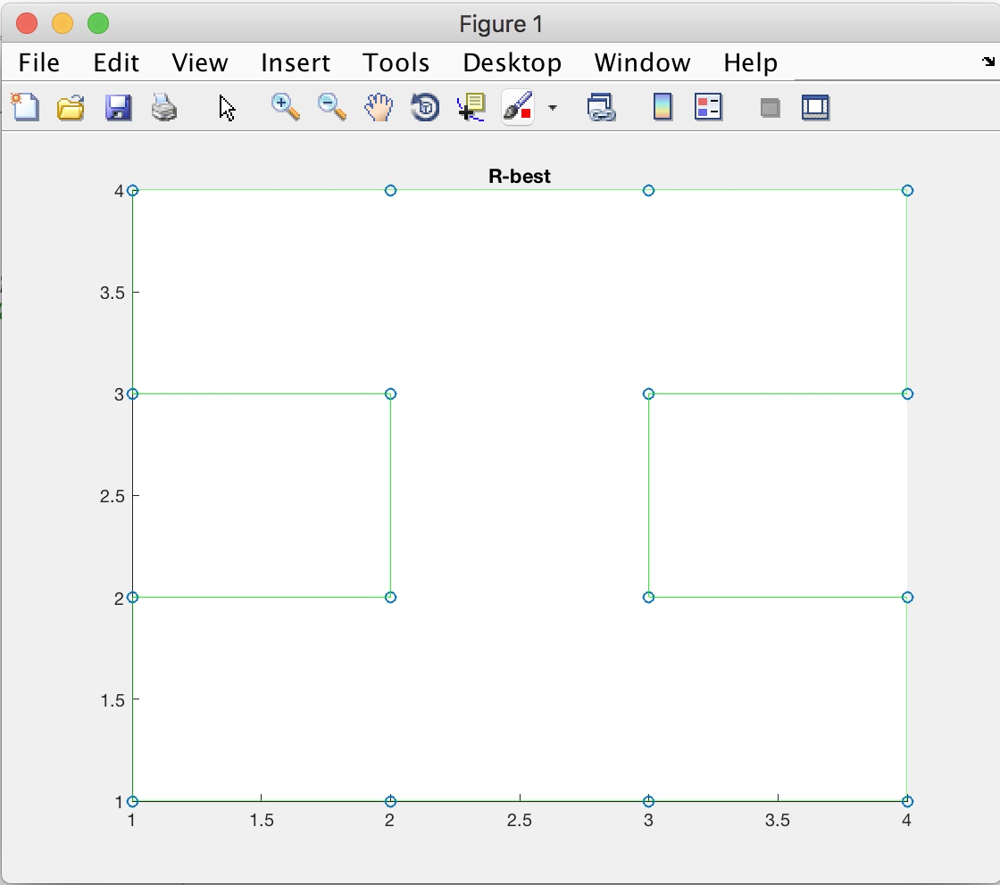
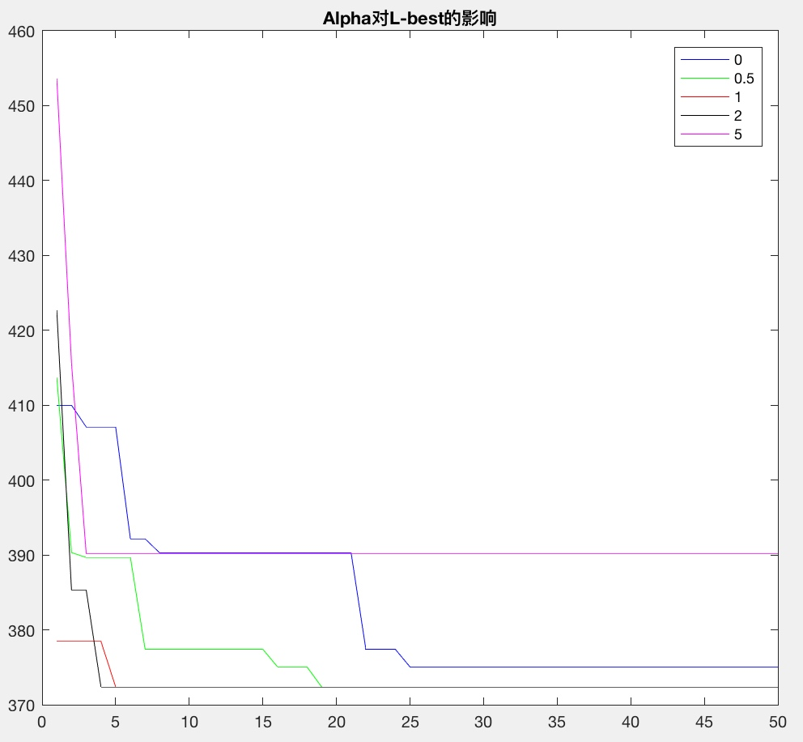
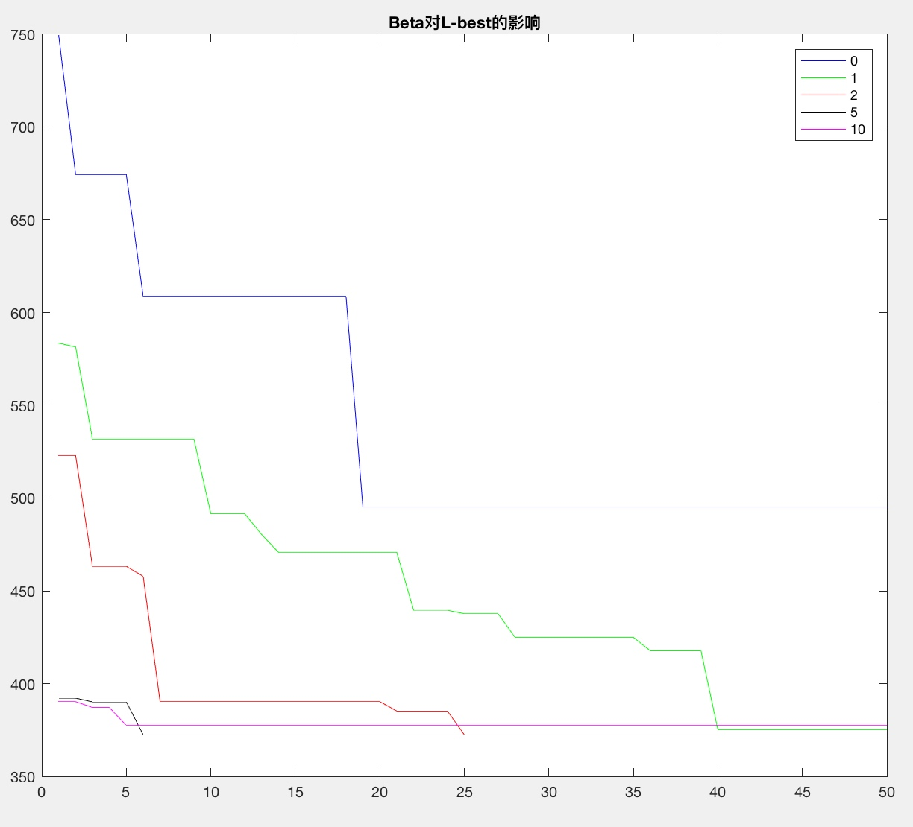

蚁群算法的作业，本来想用C++写的。研究了半天得出结论：
🙈
MATLAB写这个确实好写。😌
C菜🐦的挫败
先简单介绍下GDB这个东西，Mac下写C神器。没了解过的拿着下面两句就可以先起飞了。
gcc hello.c -o hello #这样就把hello.c编译成了hello的可执行文件
./ hello #这就输出了
【事实是半小时后放弃用C】
那么就MATLAB走起
MATLAB版-蚁群算法求解TSP
算法主要过程：
while NC<=nc_max %---="" start="" ---="" %="" 随机放置蚂蚁="" tabu="initTabu(n,m);" 蚂蚁跑完一圈="" 寻找路径="" [l_best,r_best,l,r]="findBestPath(Tabu,L_best,R_best,D,n,m,NC);" end1time="==" nc="NC+1;" 更新tau="" tau="updateTau(Tabu,Tau,L,Q,n,m,Rho);" 重置tabu="" end="" 自定义参数下求解出的最优路径

参数影响
蚂蚁数m对性能的影响

从图上可以看出，蚂蚁数m越大算法收敛越快。
蚂蚁数较少时，虽然开始几代没有找到最优解，但经过几次迭代还是收敛到了相同的结果。
信息素重要程度Alpha对性能的影响
Alpha分别取的是 [0,0.5,1,2,5]

从图上可以看出Alpha在1和2的时候性能最好。
当Alpha=0时，并没有得到最优解。此时是贪心算法。
当Alpha=5时，效果更差。信息素影响大导致算法过早收敛。
当Alpha=0.5时，需要经过较多的代数才能收敛。
启发因子重要程度Beta对性能的影响

如图所示，Beta=5时求得的最短路径最小同时收敛速度也最快。
Beta为1时需要经过较多的代数才能收敛。
Beta为2、3时效果一般。而且都不一定能收敛到最优解。
Beta为0时则结果较差。因为此时没有随机选择，容易陷入局部最优。